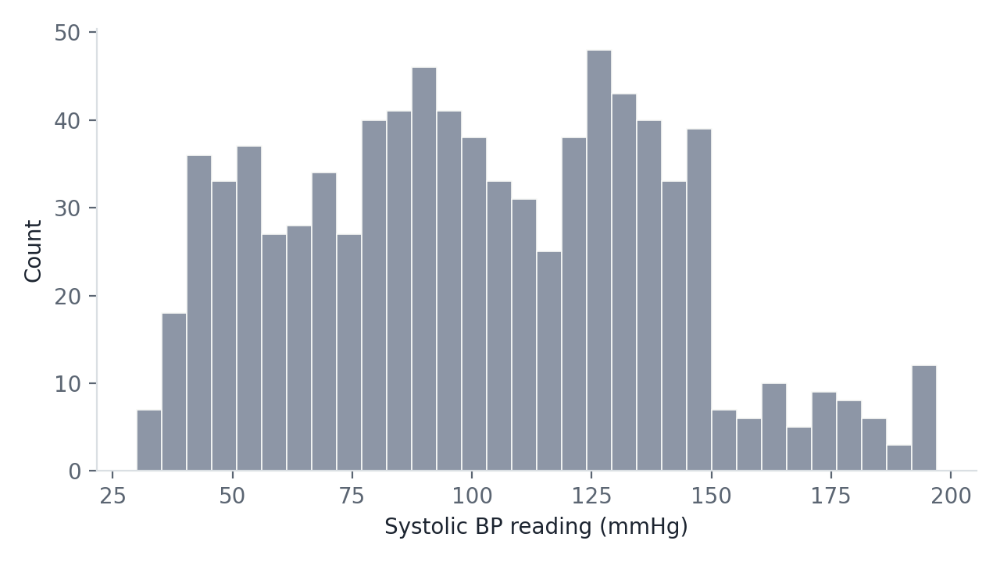
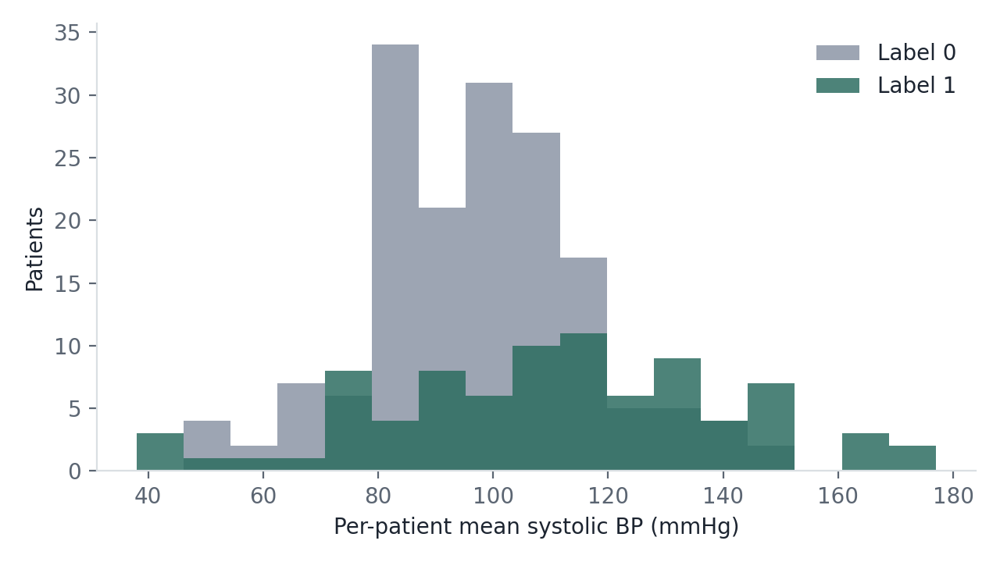
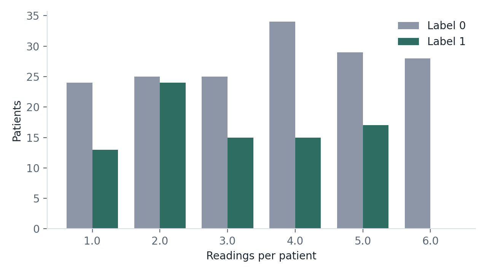
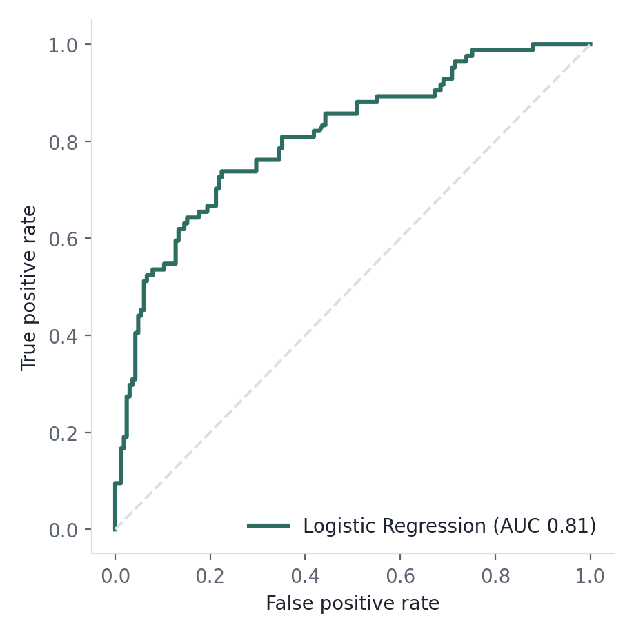
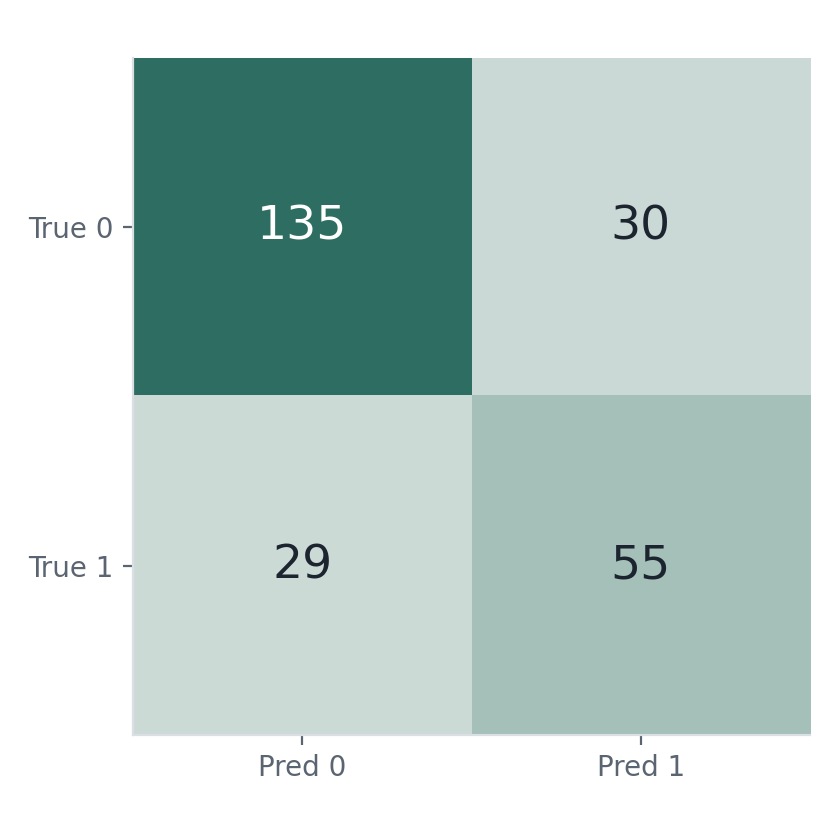
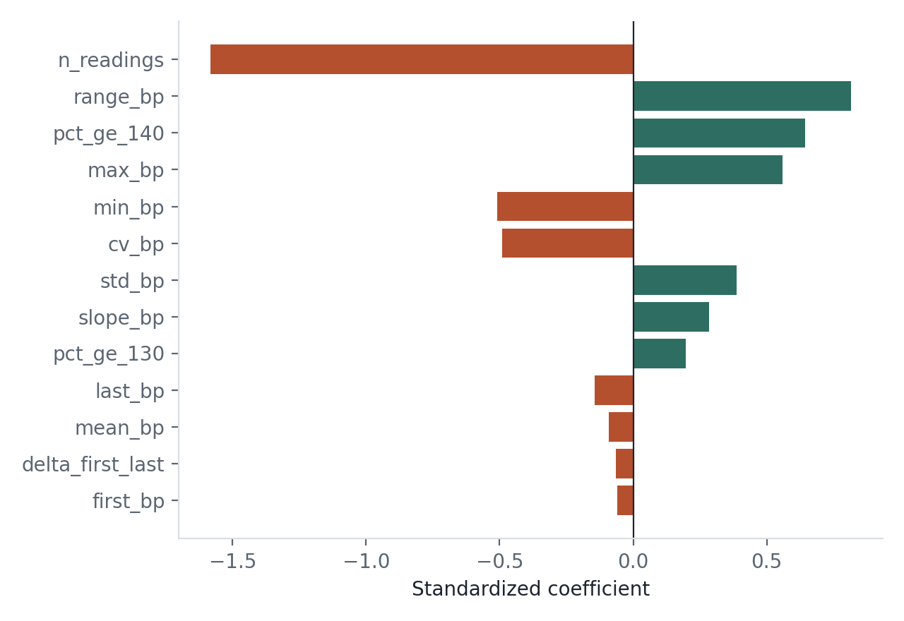

249 patients, each with 1–6 irregularly-timed systolic BP readings, were used to train and evaluate classifiers against a binary outcome label. This page documents every preprocessing decision, the engineered features, and the resulting model performance — end to end, nothing hidden below the fold.
Two files were provided: a table of raw BP readings, and a table of binary labels. Neither lines up perfectly with the other.
Timestamps are not evenly spaced and don't follow a fixed visit schedule — some patients have readings clustered close together, others spread across the full ~25,000-minute observation window. That irregularity is the reason the modeling approach (Section 03) collapses each patient's series into summary features rather than treating it as a fixed-length time series.
Four data-quality issues were found. Each is logged here with the decision made and the reasoning — nothing was silently dropped or imputed without a stated reason.
Excluded from modeling. There is no BP signal to learn from for these patients, so imputing population averages would inject noise rather than information. Their label split (15 label 1 / 35 label 0) is close to the overall rate, suggesting the missingness itself isn't strongly informative — though that can't be confirmed with certainty from this data alone.
Dropped at the row level before aggregation. A timestamp with no accompanying BP value contributes nothing to a patient's summary statistics.
One patient (id 104) has two different BP values logged at the identical timestamp. Both were kept as separate readings — aggregation into per-patient features makes this essentially harmless, but it's flagged here for anyone auditing the raw file.
Not clipped or removed. This is synthetic data with no provenance metadata to separate "measurement error" from "intentionally extreme value," so filtering on an arbitrary plausibility threshold risks removing exactly the signal the labels were built around. Logged as a limitation instead (Section 07).
Net modeling set: 249 patients (165 label 0 / 84 label 1) — the same ~2:1 imbalance as the full label file, confirming the exclusions above didn't skew class balance.
Each patient's variable-length, irregularly-timed reading series is collapsed into a fixed 13-dimensional feature vector — the right shape for a small tabular dataset, and one that keeps the model interpretable.
The last two are domain-informed: 130 and 140 mmHg are standard AHA thresholds for elevated / Stage‑2 hypertensive systolic readings, added so the model can use clinically meaningful cut points rather than only raw summary statistics.
Label 1 patients show a clear, sizeable separation in BP level and volatility — this isn't noise the model is overfitting to.
| Statistic | Label 0 | Label 1 |
|---|---|---|
| Mean of per-patient mean BP | 97.0 | 111.2 |
| Mean of per-patient max BP | 124.0 | 148.7 |
| Mean of per-patient BP range | 52.5 | 76.1 |
| Mean readings per patient | 3.62 | 2.99 |



With only 249 patients, a single train/test split gives a noisy performance estimate, so evaluation relies on repeated stratified 5-fold cross-validation (20 repeats, 100 folds total).
Features were standardized before Logistic Regression. Class imbalance (2:1) was handled with
class_weight="balanced" rather than resampling, to avoid distorting an already-small dataset further.
Four models were compared:
| Model | Role |
|---|---|
| Majority-class baseline | Sanity-check floor |
| Logistic Regression | Primary model — interpretable, regularized (L2) |
| Random Forest | Nonlinear comparison, shallow & regularized |
| Gradient Boosting | Nonlinear comparison, shallow trees, low learning rate |
All three real models clear the 0.50-AUC baseline by a wide margin — BP data carries genuine predictive signal for this label.
| Model | ROC-AUC | PR-AUC | Accuracy | Precision | Recall | F1 |
|---|---|---|---|---|---|---|
| Majority-class baseline | 0.500 | 0.337 | 0.663 | 0.000 | 0.000 | 0.000 |
| Logistic Regression | 0.820 ± .048 | 0.746 ± .072 | 0.763 ± .051 | 0.658 ± .094 | 0.656 ± .107 | 0.650 ± .075 |
| Random Forest | 0.867 ± .045 | 0.847 ± .045 | 0.841 ± .037 | 0.859 ± .095 | 0.645 ± .093 | 0.730 ± .066 |
| Gradient Boosting | 0.880 ± .049 | 0.865 ± .051 | 0.859 ± .041 | 0.900 ± .088 | 0.663 ± .106 | 0.757 ± .076 |



range_bp, pct_ge_140, max_bp. Strongest negative
driver: n_readings. mean_bp's small coefficient here reflects multicollinearity with
max_bp/range_bp, not unimportance — it's strongly separated univariately (Section 04).What I'd flag before this model is used for anything beyond this evaluation.
Everything needed to reproduce or audit this analysis.